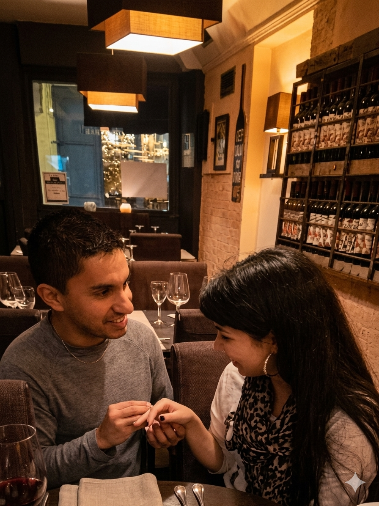
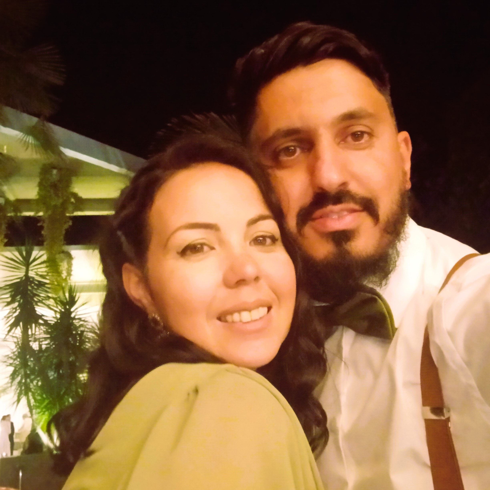
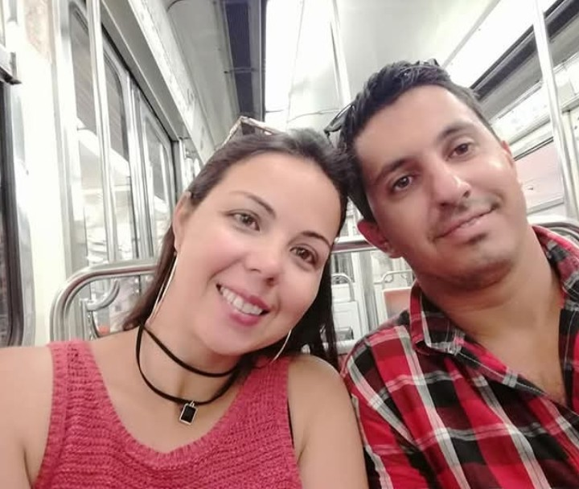

25 • Julho • 2026
Quinta do Gato Preto • Ponte de Sor
"Foram os nossos filhos que nos aproximaram, mas foi Deus quem escreveu a nossa história."
E com enorme alegria que convidamos a todos vocês para celebrar connosco este momento tão especial.
A vossa presença torna este dia ainda mais significativo e somos gratos por podermos partilhar esta etapa da nossa história com as pessoas que mais amamos.
Sejam bem-vindos ao nosso casamento.
Sim, tudo começou em um belo dia, enquanto os nossos filhos brincavam juntos no parque. Entre sorrisos, conversas e a simplicidade daquele momento, conhecemo-nos. Trocamos contactos, começamos a falar e, sem darmos por isso, as mensagens transformaram-se em longas caminhadas, em uma amizade que viria a mudar as nossas vidas para sempre.
O que começou como uma amizade sincera transformou-se naturalmente em amor. Acreditamos que foi Deus quem permitiu que esta união florescesse e permanecesse firme ao longo dos anos.
Somos diferentes, com personalidades distintas. Ela é calma e serena; eu sou um pouco mais impulsivo. Mas são precisamente essas diferenças que nos completam e tornam a nossa caminhada tão especial.
Deus tem sido a base da nossa relação, a força da nossa família e o alicerce que nos mantém unidos. Jesus é o centro da nossa casa, dos nossos sonhos e de tudo aquilo que construímos juntos.



Uma canção muito especial que marcou o início da nossa história.
🎵 Seja Onde For — Portal 74"O nosso fotógrafo irá registar muitos momentos, mas sabemos que alguns dos melhores momentos serão captados por vocês." Partilhem connosco as vossas fotografias e vídeos deste dia inesquecível.
As suas fotos ficarão disponíveis no álbum para que possamos recordar este dia especial. Obrigado por nos ajudarem a guardar estas memórias para sempre ❤️
📸 Partilhar Fotos e Vídeos
NIB
0035 0639 0001 8918 2005 0
IBAN
PT50 0035 0639 0001 8918 2005 0
MB WAY
+351 934 957 791
"O cordão de três dobras não se quebra facilmente."
Eclesiastes 4:121 Coríntios 13:1-7
"Ainda que eu falasse as línguas dos homens e dos anjos, e não tivesse amor, seria como o metal que soa ou como o sino que tine. E ainda que tivesse o dom de profecia, e conhecesse todos os mistérios e toda a ciência; e ainda que tivesse toda a fé, de maneira tal que transportasse os montes, e não tivesse amor, nada seria. E ainda que distribuísse toda a minha fortuna para sustento dos pobres, e ainda que entregasse o meu corpo para ser queimado, e não tivesse amor, nada disso me aproveitaria. O amor é paciente, o amor é bondoso. Não inveja, não se vangloria, não se orgulha. Não maltrata, não procura os seus próprios interesses, não se irrita facilmente, não guarda rancor. O amor não se alegra com a injustiça, mas regozija-se com a verdade. Tudo sofre, tudo crê, tudo espera, tudo suporta."